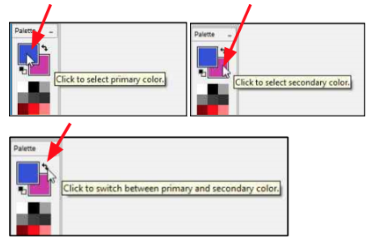
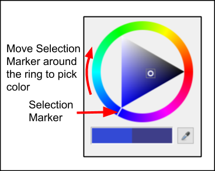
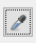
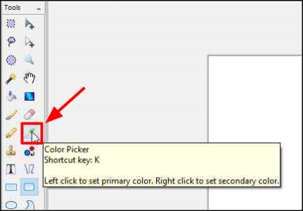

Customize Colors¶
To add color to an object/text/image/layer you will need to select a primary and in some cases a secondary color.
You can quickly select a color from the color palette (left-click on the palette color select primary, and right-click to select secondary) or in some cases you may want to choose a more customized color.
Select a customized color by using Set Color Values or Select an Exact Color Match From an Image.
Set Color Values¶
-
Select the Primary Color or Secondary Color boxes in the Palette. Click the double-arrow toggle to switch between the primary and secondary colors.

The corresponding Choose Primary Color or Choose Secondary dialog boxes will then appear on your screen.


-
From the Choose Primary or Choose Secondary Menu you have the following options to set the color:
- Triangle Dial Selector:
i. Click on the selection marker on the ring and drag it around to select a color.

ii. Select the darkness or lightness of the ring color by clicking on a shade of the color in the inner triangle.

- Hue, Saturation, Value: Enter in the desired values. The triangle dial selector will move automatically to the corresponding values selected.
- Red, Green, Blue: Enter the RGB Color. The triangle dial selector will move then to the selected RGB value.
- Opacity: Enter in the value desired (0 - 255). The lower the number chosen the more translucent the color will be.
- Color Name: If you know the color name you want you can directly input the value. Entering in a number will change the RGB color and move the dial selector settings to the corresponding color. If the RGB color or the triangle dial selector was used to select a color this color name value will be updated.
- Eye Dropper: Click on the eyedropper  and then click a color anywhere on your screen to select that color. The corresponding color values will then be displayed on the Choose Primary Color or Choose Secondary Color dialog box.
- Triangle Dial Selector:
Select an Exact Color Match From an Image¶
-
Select the Color Picker from the Tools menu.

-
Left-click to set the primary color and right-click to set the secondary color.
- Move the Color Picker across the workspace and click on the image color pixel you would like to capture.